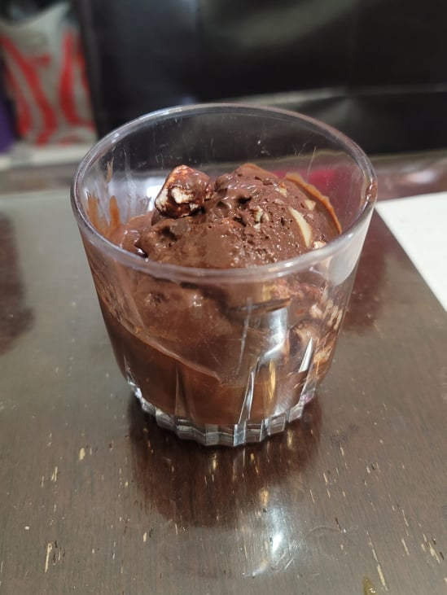

Rocky Road Ice Cream

Ingredients:
- 1 1/2 cup Heavy cream
- 1 cup Milk
- 1/2 cup Cocoa Powder
- 3/4 cup Sugar
- 1/8 tsp Salt
- 1/2 cup Semi-sweet chocolate chips
- 1 tsp Vanilla extract
- 1 tsp Almond extract
- 1 cup Marshmallows
- 1/2 cup Sliced almonds
- 1/2 cup Semi-sweet mini chocolate chips
Instructions:
- Combine the milk, heavy cream, cocoa powder, sugar, and salt into a large pot. Whisking constantly while heating over medium-high heat until it reaches a boil. Once it comes to a boil, lower the heat and let it simmer for 2 minutes, still whisking constantly. Then remove from the heat and immediately whisk in the chocolate chips and extracts. Let chill in the fridge completely.
- Pour the cooled mixture into an already churning ice cream maker. Let churn until soft serve consistency, about 40 minutes.
- Pour the soft serve ice cream into a sealable container and fold in the marshmallows, almonds, and chocolate chips. Let freeze until firm.